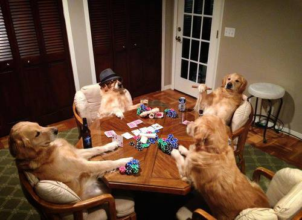

Github is a GIS Repository hosting service used by millons to manage projects. Today we are going to use it to host our own static website
#github

What can I host on Github
You will be able to host static files of almost any type, but you will not be able to run spoftware (such as Geoserver)
What this will allow you to do is run a site such as this and host maps such as this!
In order to do this you will need these things
A computer machine
the internet
a github accont
some github Software
a fine text editor

Lets get started, head over to github and register (if you dont have an account). go ahead and select the free tier and accept.
Head over to your email and verify real quick. sweet, you are all signed up.
Now that we have a username we can fire up a website. have a look here for more information about github pages.
We now need to create a repository that is exactly the same as your username plus github.io. so your repo should be username.github.io to do this from the main page click on the "plus" symbol and select new repository.
make sure to name it exactly as your username, it is the only way it will work. Select public (you shouldnt be able to make a private one) and click create

Now that we have our repository we need some software to interact with it. you should be automatically directed to the download site for your OS. Go ahead and download the exe and install.
We now need to link our account to the software to our accounts so we can add, delete and change files. to do this go to the wheel, options and login.
Our account is now linked, awesome. now we will pull down our repository we created so we can add some web files. Click on the plus in the upper left. you should see a clone option, you should see the repo you created earlier, select it and then select whichever folder on your local you would like to work in.
Cruise over to whichever folder/directory you told github to put the repo in. you should see a folder of your reponame. this is where we will place our files.
to save on time lets go ahead and download a simple html template. have a click on this bad boy to download the files.
go ahead and extract the files to your directory. we want the index.html to be at the root of our repo so when someone goes to username.github.io they see our sweet webpages. go ahead and copy the files in the startbootstrap-bare-1.0.2 folder and move them up one to the username folder.
sweet. lets see if we can get this bare page published. go back to the gitbug software. you should see a list of all of the files we added. in the middle click on show, this is the commit interface. when you commit something you send it to github. give your commit a name and click commit!
now that we have our commit we need to publish it to github. go ahead and fire publish and then sync in the top right. once the progrss bar is done go back to your web browser and have a look at your repo. look at all of those wicked files.
And now for the difficult part, waiting. Githun does warn that is may take a few minutes to get the page running the correct way so sit back, relax, maybe read a poem or two. eventually, you will be able to go to http://username.github.io and see your webpage.

We Made it!
We are reallh humming now. Lets go ahead and play around with some leaflet maps now! Head over to this link and save it as an HTML file into your Github directory.
Map!!!